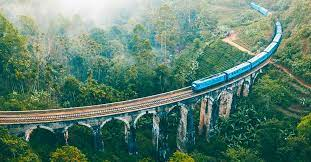
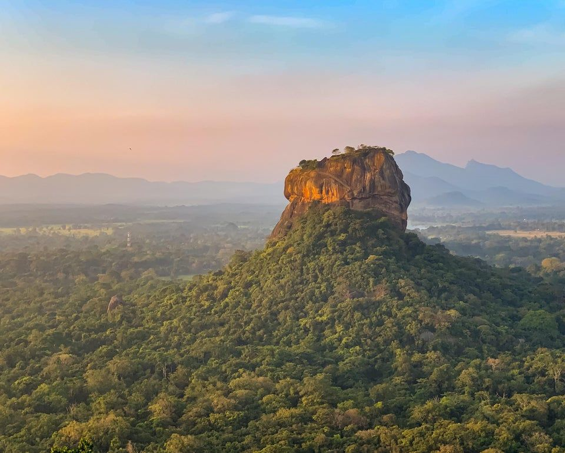
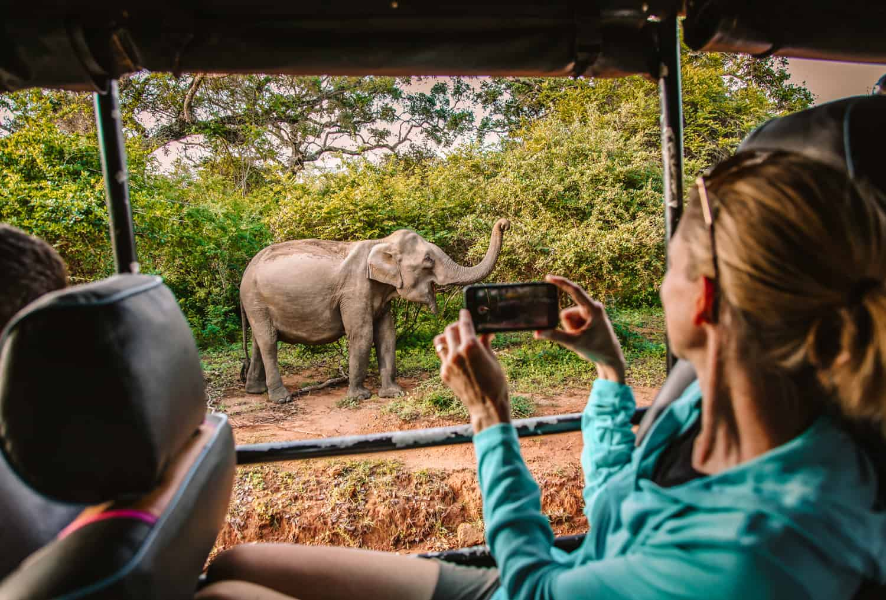
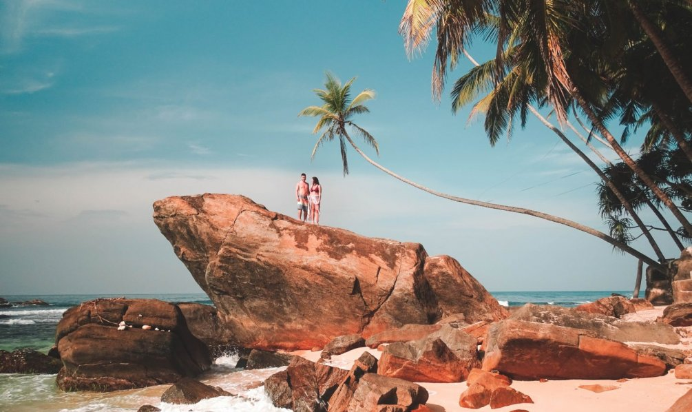
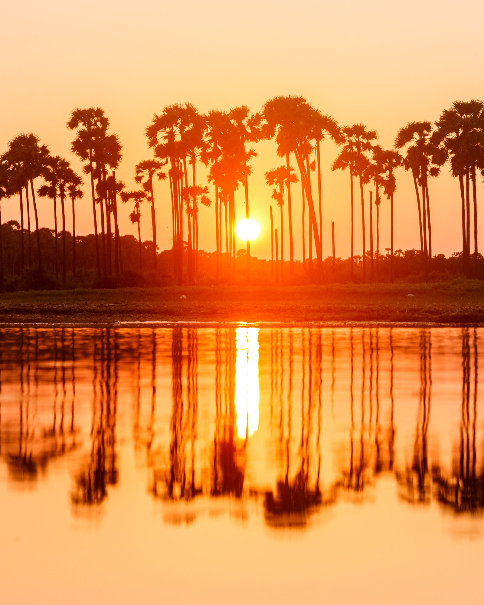
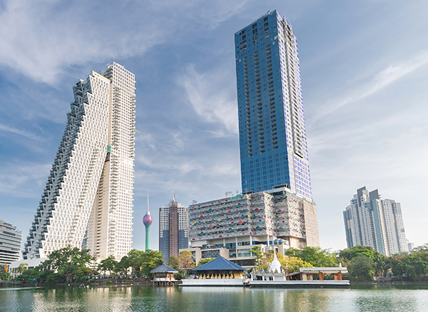
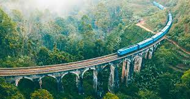
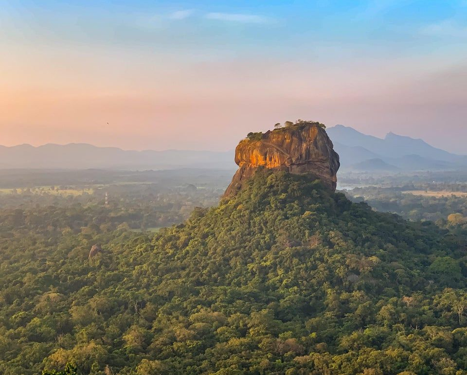
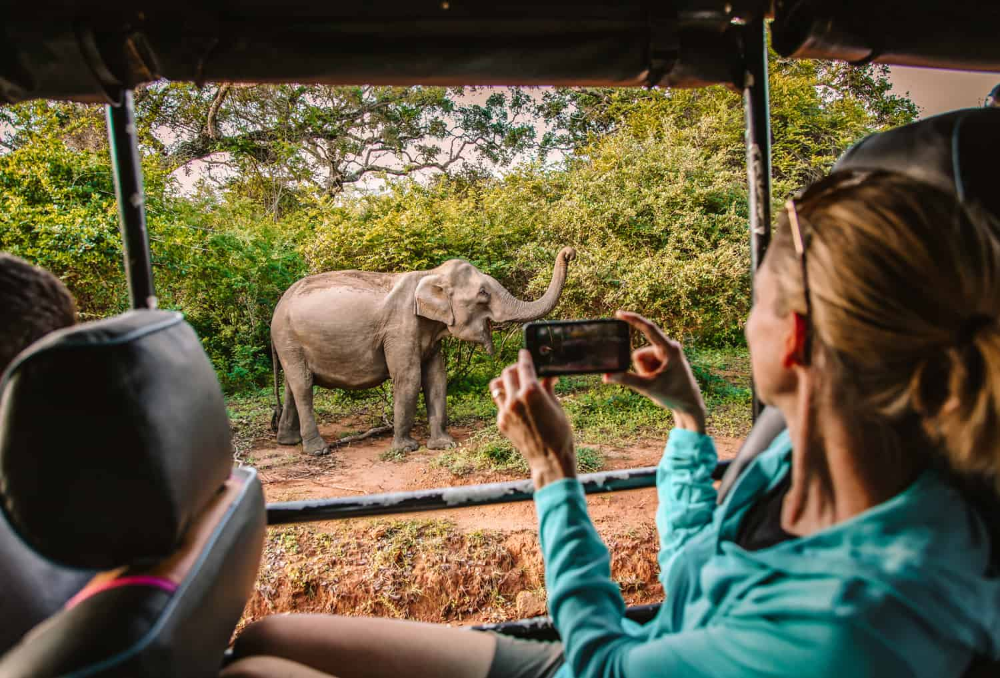
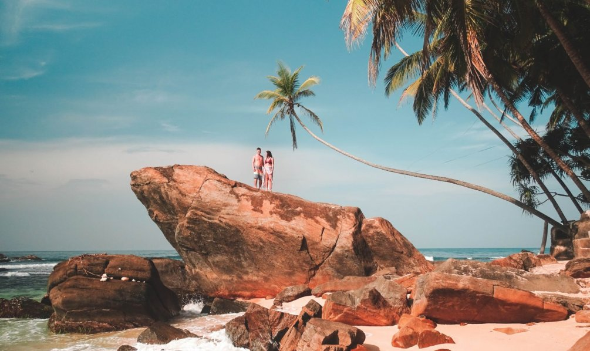
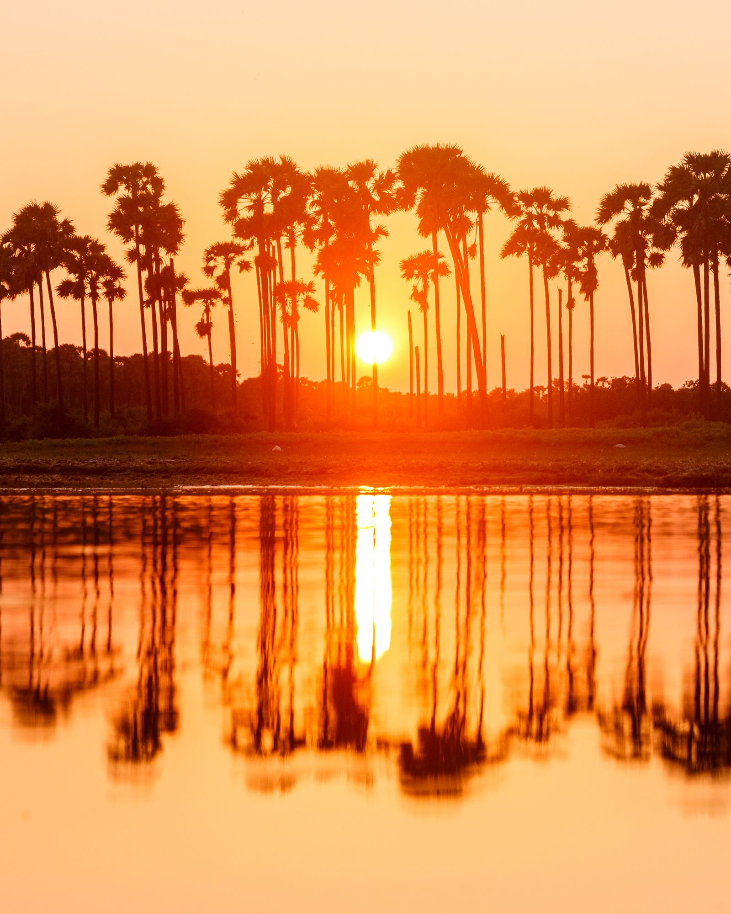
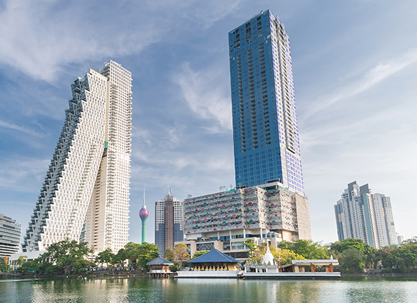
GALLE FORT
Galle, a vibrant city that embraces its ancient and colonial past, is made famous by its 17th century Dutch fort, by far the best surviving European fort in Asia. The Galle Fort is a magnificent UNESCO World Heritage Site and is a living monument, inhabited by a bustling community, within the great ramparts, massive bastions and pepper pot towers. The once sleepy Galle Fort is now a dynamic area with a distinctively Mediterranean atmosphere. The golden sandy beaches along the southern coast, and a number of luxurious retreats makes Sri Lanka’s south coast an ideal escape from frenetic everyday life.
KANDY
Lush forests, sprawling mountain ranges, the meandering Kandy Lake, known as the Sea of Milk, and an array of distinguished colonial building and magnificent Kandyan inspired architecture completes this Medieval City. This beautiful, laidback capital is only 72 miles (115 kilometres) inland yet boasts exceptional cultural and historical attractions, set amidst forested hills. Known as a pilgrimage destination for the Temple of the Tooth Relic (a sacred tooth of the Buddha), a listed UNESCO World Heritage Site, Kandy is a sacred city, due to the importance and spiritual significance of this temple.
ELLA
Ella is so cool and chill that it’s easy to stay a few days. Either hiking or hanging out in a cozy hotel overlooking the waterfalls or mountains, life is easy and breezy in Ella. There is no rush for anything; the food is good, the people are nice and the weather is usually perfect. It’s one of the most relaxed places in Sri Lanka.
SIGIRIYA
Sri Lanka’s most identifiable landmark, Sigiriya Rock, looms above the surrounding plains: an ideal place for a fortress. However, when the usurper King Kasyapa built his base here in the 5th century, he didn’t merely build a fortress. Instead, he built a grand palace complete with pleasure grounds below. Today only ruins of the palace remain, but features such as a pair of enormous stone lion’s paws give you a glimpse of its former splendour.
YALA
Yala National Park is located in the south-east corner of Sri Lanka and is the most popular destination for wildlife viewing. Leopards are the star attraction and Yala is believed to have the world’s highest concentration of these big cats.
UNAWATUNA BEACH
Unawatuna is one of the most popular attractions in Sri Lanka.This banana shaped beach, with its golden sand, sparkling water, and lush palm trees is the perfect place to relax and spend some quality time with your family. There are sunbeds available for you to sit back relax and enjoy your day with a drink.
JAFFNA
Jaffna is quite different compared to the rest of Sri Lanka regarding its food, religion, and language. It's a great place to delve into the Tamil culture and ancient sights in an area many tourists don't venture to. The northern peninsula has very modest infrastructure outside of Jaffna town.
COLOMBO
Cosmopolitan Colombo, gateway to the wonder of Sri Lanka, boasts a rich colonial heritage, featuring a melting pot of races, religions and cultures. A city of contrasts, it is both an eclectic mix of shiny hotels and swanky office blocks, neighbouring beautiful red-tiled colonial-era buildings. Sprawling bustling street markets brim with fragrant spices, colourful silks, cottons and fresh fruit and vegetables. Discover Colombo’s multi-ethnic legacy with churches, mosques and temples congregating on the same streets, and delve into iconic sites including Fort Station, the Red Mosque, and the Khan clock tower. Plunge into Colombo’s enticing street food scene, eat like a local, and immerse yourself in the sights, sounds and aromas of the whirling Pettah Bazaar